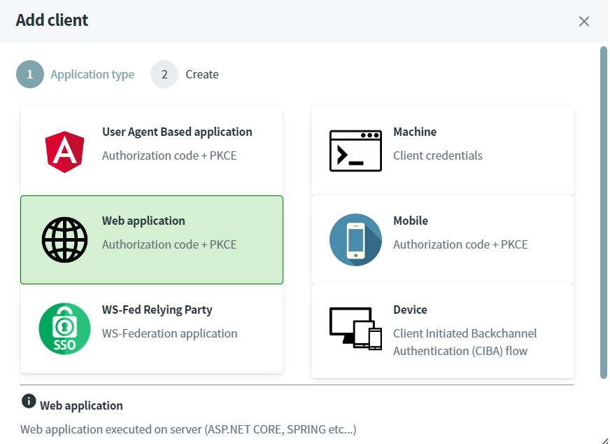

Protect server-side application using ASP.NET CORE
Server-Side application must use authorization code grant-type.
Warning
Before you start, Make sure you have an up and running IdentityServer and IdentityServer website.
Source Code
The source code of this project can be found here.
Add a client
The first step consists to configure the OPENID client.
- Open the IdentityServer website http://localhost:5002.
- In the Clients screen, click on
Add clientbutton. - Select
web applicationand click on next.

- Fill-in the form like this and click on the
Savebutton to confirm the creation. The secret must be equals topassword.

Create ASP.NET CORE application
The last step consists to create and configure an ASP.NET CORE project.
- Open a command prompt, run the following commands to create the directory structure for the solution.
mkdir ProtectWebsiteServerside
cd ProtectWebsiteServerside
mkdir src
dotnet new sln -n ProtectWebsiteServerside
- Create a web project named
Websiteand install theMicrosoft.AspNetCore.Authentication.OpenIdConnectnuget package.
cd src
dotnet new mvc -n Website
cd Website
dotnet add package Microsoft.AspNetCore.Authentication.OpenIdConnect
- Add the
Websiteproject into your Visual Studio solution.
cd ..\..
dotnet sln add ./src/Website/Website.csproj
- Edit the
Program.csfile and configure the OpenId authentication.
builder.Services.AddAuthentication(options =>
{
options.DefaultScheme = "Cookies";
options.DefaultChallengeScheme = "sid";
})
.AddCookie("Cookies")
.AddOpenIdConnect("sid", options =>
{
options.SignInScheme = "Cookies";
options.ResponseType = "code";
options.Authority = "https://localhost:5001/master";
options.RequireHttpsMetadata = false;
options.ClientId = "protectedServersideApp";
options.ClientSecret = "password";
options.GetClaimsFromUserInfoEndpoint = true;
options.SaveTokens = true;
});
...
app.UseCookiePolicy(new CookiePolicyOptions
{
Secure = CookieSecurePolicy.Always
});
app.UseHttpsRedirection();
app.UseStaticFiles();
app.UseRouting();
app.UseAuthorization();
...
- Add a
ClaimsControllercontroller with one protected operation.
public class ClaimsController : Controller
{
[Authorize]
public IActionResult Index()
{
return View();
}
}
- Create a view
Views\Claims\Index.cshtmlwith the following content. It will display all the claims of the authenticated user.
<ul>
@foreach (var claim in User.Claims)
{
<li>@claim.Type : @claim.Value</li>
}
</ul>
- In a command prompt, navigate to the directory
src\Websiteand launch the application.
dotnet run --urls=http://localhost:7000
- Browse this URL http://localhost:7000/claims, the User-Agent is automatically redirected to the OPENID server.
Submit the credentials - login :
administrator, password :passwordand confirm the consent. You'll be redirected to the following screen where your claims will be displayed.